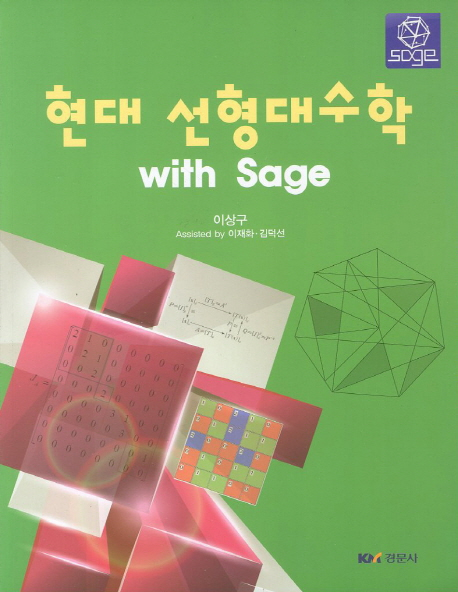

선형대수학 추천도서

목 차
- 벡터
- 선형연립방정식
- 행렬과 행렬대수
- 행렬식
- 행렬모델
- 선형변환
- 차원과 부분공간
- 행렬의 대각화
- 일반벡터공간
- Jordan 표준형
- 부록
본 저서를 추천하는 이유: 본 선형대수학 책은 전체적으로 자세한 설명이 있다. 먼저 벡터와
선형연립방정식을 소개한 후, 행렬을 다루고, 그 다음에는 선형변환, 차원, 부분공간을 행렬과
연계해서 다루었다. 그 다음에 행렬의 대각화와 벡터의 성질을 추상화한 일반벡터공간(벡터의
성질과 비슷한 집합을 벡터공간이라고 한다)을 다루고, 마지막으로는 대각화가 불가능한 경우
에 대각화와 성질이 비슷한 조르단 표준형을 다루고 있다.